原文出处:本文由博客园博主struct_mooc提供。
原文连接:https://www.cnblogs.com/structmooc/p/11694981.html
原文连接:https://www.cnblogs.com/structmooc/p/11694981.html
版权声明：本文为博主原创文章，遵循CC 4.0 BY-SA 版权协议，转载请附上原文出处链接及本声明。
作者：struct_mooc 博客地址：https://www.cnblogs.com/structmooc/p/11694981.html
本博文仅为本人学习的一个记录和总结！
学校开设了JSP这门课，觉得挺有意思的，就去网上学了一下HTML，我是在菜鸟教程学的，用的是HBuilder(这真是一个很好的IDE)学完之后就想总结一下知识点，巩固一下。
代码后面跟的都是用HTML标签之后显示的效果图片。
1.HTML默认模板
<!DOCTYPE html> <!-- 声明为 HTML5 文档 -->
<html> <!-- 元素是 HTML 页面的根元素 -->
<head> <!-- 元素包含了文档的元（meta）数据 -->
<meta charset="utf-8"> <!-- 定义网页编码格式为 utf-8 -->
<title>总结</title> <!-- 文档的标题 -->
</head>
<body> <!-- 可见的页面内容 -->
</body>
</html>2.定义标题
<p> <!-- 定义标题 -->
<h1>一号标题</h1>
<h2>二号标题</h2>
<h3>三号标题</h3>
<h4>四号标题</h4>
<h5>五号标题</h5>
<h6>六号标题</h6>
</p>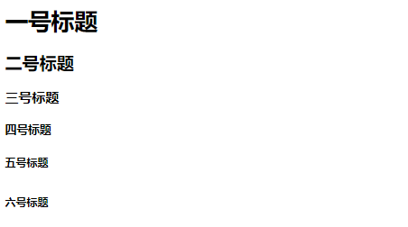
3.定义注释，段落，换行
<p> <!-- 定义注释，段落，换行 -->
这是一个注释 <!-- 注释内容 -->
<br/> <!-- 这是换行 -->
<!-- 这是空格 -->
<hr > <!-- 定义水平线 -->
<p>这是一个段落</p>
</p>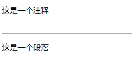
4.定义文本
<p> <!-- 定义文本 -->
普通文本<br />
<b>加粗文本</b><br/>
<strong>加粗文本</strong><br/>
<i>倾斜文本</i><br/>
<em>倾斜文本</em><br/>
<big>放大文本</big><br/>
<small>缩小文本</small><br/>
文本上标<sup>上标</sup> 例如:X <sup>2</sup> <br/>
文本下标<sub>下标</sub> 例如:O <sub>2</sub> <br/>
<bdo dir="rtl">该段落文字从右到左显示。</bdo> <br/>
<br>演示:
<q>实现长短不一的引用语</q>
！<br/>
<del>删除文本</del> 和 <ins>插入文本</ins>!
</p>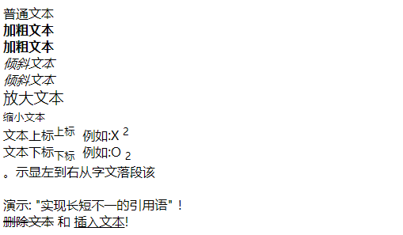
5.定义图片
<p> <!-- 定义图片 -->
<!-- <img src="url" alt="some_text"> --> <!-- url指存储图像的位置 -->
<img src="http://www.runoob.com/images/pulpit.jpg" alt="some_text"><!-- 这是定义一张来自网页的一张图片的语法 --><br/>
<img src="Snipaste.png" width="305" height="200"><!-- 这是定义一张与本HTML文件在同一文件夹下的图片的语法，后面的宽度和高度，不加为默认值 -->
<p>图片与文字默认底部对齐 <img src="Snipaste.png" alt="PDF-Word" align="bottom" width="32" height="32"> </p>
<p>图片与文字默认中心对齐 <img src="Snipaste.png" alt="PDF-Word" align="center" width="32" height="32"> </p>
<p>图片与文字默认顶部对齐 <img src="Snipaste.png" alt="PDF-Word" align="top" width="32" height="32"> </p>
<!-- alt用来在浏览器无法载入图像时，替换文本属性告诉读者失去的信息。 -->
</p>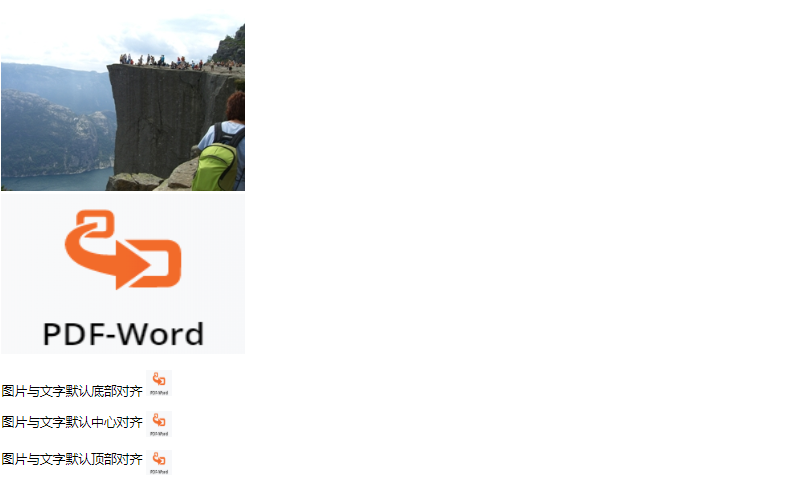
6.定义图片链接
<p><!-- 定义图片链接 -->
<p>点击太阳或其他行星，注意变化：</p><!-- 显示如何创建带有可供点击区域的图像地图。其中的每个区域都是一个超级链接。 -->
<img src="planets.png" width="145" height="126" alt="Planets" usemap="#planetmap">
<map name="planetmap">
<area shape="rect" coords="0,0,82,126" alt="Sun" href="sun.png">
<area shape="circle" coords="90,58,3" alt="Mercury" href="mercur.png">
<area shape="circle" coords="124,58,8" alt="Venus" href="venus.png">
</map><!-- shape表示点击区域的形状，coords指坐标，href指图片地址，这里我换成了自己截取保存的图片，原为"sun.htm"无法打开。 -->
</p><!-- 我把点击第一张的图片的三个星球之后的图片也发出来了，可以保存在自己电脑和自己的HTML在同一文件夹下就好然后点击就好了。 -->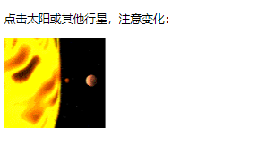
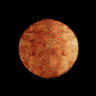
7.定义预格式文本
<p> <!-- 定义预格式文本 -->
<pre>
用pre标签可以将处于pre标签中的
空行
和 空格
原封不动的输出
</pre>
</p>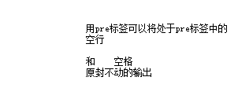
8.不同的"计算机输出"标签
<p> <!-- 不同的"计算机输出"标签 -->
<code>计算机输出</code> <br/>
<kbd>键盘输入</kbd> <br/>
<tt>打字机文本</tt> <br/>
<samp>计算机代码样本</samp> <br/>
<var>计算机变量</var> <br/>
</p>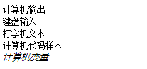
9.缩写或首字母缩写
<p> <!-- 缩写或首字母缩写 -->
<abbr title="etcetera">etc.</abbr> <br/>
<acronym title="World Wide Web">WWW</acronym><br/>
<br>把鼠标移至缩略词语上时，可展示完整版本。<br/>
</p>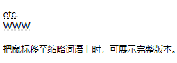
10.定义链接
<p> <!-- 定义链接 -->
<a href="https://www.cnblogs.com/" target="_blank">这是通往博客园的链接</a>
<!-- target 属性设置为 "_blank", 链接将在新窗口打开。 --><br/>
<a href="img.html">本链接是指向与本文件在同一文件夹的链接。</a><br/>
<a href="https://www.cnblogs.com/structmooc/"><img border="10" src="Snipaste.png" alt="HTML 教程" width="100" height="100"></a><br/>
<a href="Snipaste.png"><img border="0" src="cnblogs.png" alt="HTML 教程" width="120" height="80"></a><br/>
<!-- href表示指向的地址，border表示图片链接边框大小。 -->
<a href="https://www.cnblogs.com/structmooc/" target="_top">点击这里!</a> 跳出框架！<br/>
<!-- 假如你的页面被固定在框架之内，点击这个链接将跳出这个框架 -->
</p>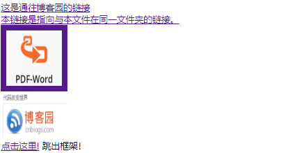
11.跳到指定章节
<p> <!-- 跳到指定章节 -->
<a href="#C4">查看章节 4</a>
<h2><a id="C1">章节 1</h2>
<p>这边显示该章节的内容……</p>
<h2><a id="C2">章节 2</h2>
<p>这边显示该章节的内容……</p>
<h2><a id="C3">章节 3</h2>
<p>这边显示该章节的内容……</p>
<h2><a id="C4">章节 4</a></h2>
<p>这边显示该章节的内容……</p>
</p>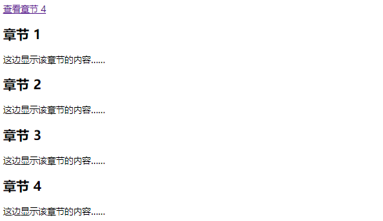
12.CSS内联样式
<p> <!-- CSS内联样式 -->
<!-- CSS 可以通过以下方式添加到HTML中:
内联样式- 在HTML元素中使用"style" 属性
内部样式表 -在HTML文档头部 <head> 区域使用<style> 元素 来包含CSS
外部引用 - 使用外部 CSS 文件
最好的方式是通过外部引用CSS文件 -->
<p style="color:blue;margin-left:20px;">这是一个段落。</p> <!-- color定义字体颜色，margin-left表示文本向左移动20px。 -->
<p style="color:palegoldenrod;background-color:red;">这是一个段落</p>
<p style="background-color:green;">这是一个段落。</p> <!-- background-color用于改变字体背景颜色，字体颜色默认为黑色. -->
<p style="font-family:隶书;color:red;font-size:40px;">一个段落。</p> <!-- font-family改变字体，font-size改变字体大小 -->
<h1 style="font-family:宋体;color:navajowhite;text-align:center;">居中对齐的标题</h1>
<h1 style="font-family:黑体;text-align:left;">向左对齐的标题</h1> <!-- text-align用来定义文本位置 -->
</p>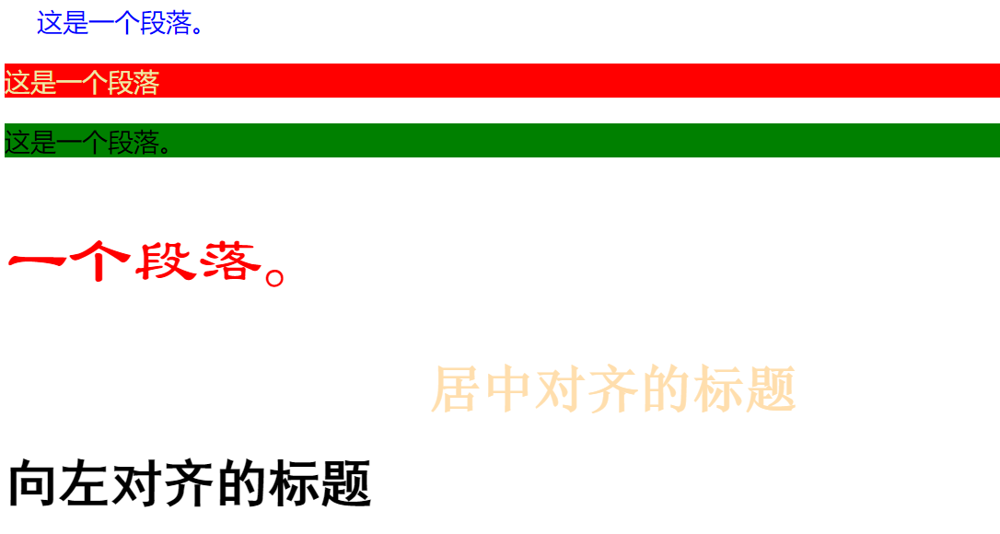
13.定义列表
<p> <!-- 定义列表 -->
<h4>无序列表：</h4>
<ul>
<li>Coffee</li> <!-- li定义列表项 -->
<li>Milk</li>
</ul>
<h4>有序列表：</h4>
<ol>
<li>Coffee</li>
<li>Milk</li>
</ol>
<h4>圆点列表：</h4>
<ul style="list-style-type:disc">
<li>Apples</li>
<li>Bananas</li>
<li>Lemons</li>
</ul>
<h4>圆圈列表：</h4>
<ul style="list-style-type:circle">
<li>Apples</li>
<li>Bananas</li>
<li>Lemons</li>
</ul>
<h4>正方形列表：</h4>
<ul style="list-style-type:square">
<li>Apples</li>
<li>Bananas</li>
<li>Lemons</li>
</ul>
<h4>编号列表：</h4>
<ol>
<li>Apples</li>
<li>Bananas</li>
<li>Lemons</li>
</ol>
<h4>大写字母列表：</h4>
<ol type="A">
<li>Apples</li>
<li>Bananas</li>
<li>Lemons</li>
</ol>
<h4>小写字母列表：</h4>
<ol type="a">
<li>Apples</li>
<li>Bananas</li>
<li>Lemons</li>
</ol>
<h4>罗马数字列表：</h4>
<ol type="I">
<li>Apples</li>
<li>Bananas</li>
<li>Lemons</li>
</ol>
<h4>小写罗马数字列表：</h4>
<ol type="i">
<li>Apples</li>
<li>Bananas</li>
<li>Lemons</li>
</ol>
<h4>嵌套列表：</h4>
<ul>
<li>Coffee</li>
<li>Tea
<ul>
<li>Black tea</li>
<li>Green tea</li>
<ul>
<li>China</li>
<li>Africa</li>
</ul>
</li>
</ul>
</li>
<li>Milk</li>
</ul>
<h4>一个自定义列表：</h4>
<dl><!-- dl定义列表 -->
<dt>Coffee</dt> <!-- dt自定义列表项目 -->
<dd>- black hot drink</dd><!-- dd定义自定列表项的描述 -->
<dt>Milk</dt>
<dd>- white cold drink</dd>
</dl>
</p>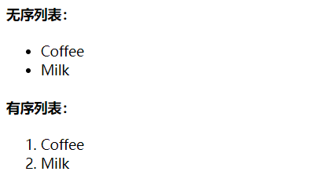
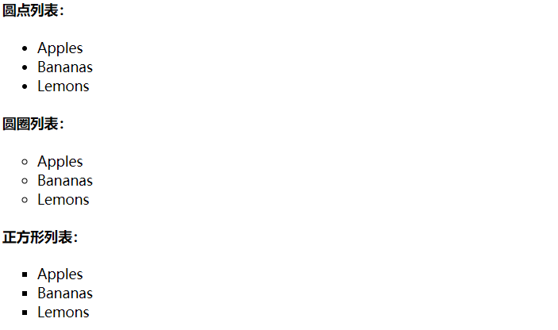
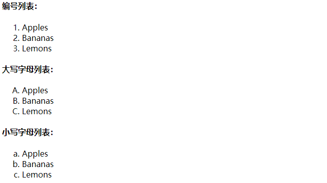
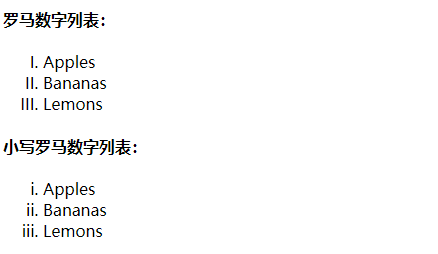
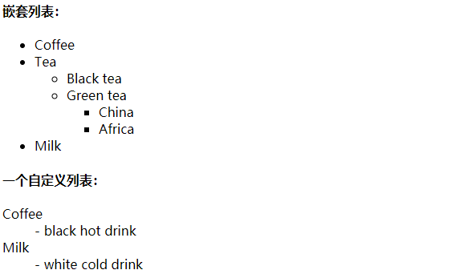
14.定义表格
<p> <!-- 定义表格 -->
<h4>两行三列:</h4>
<table border="1"> <!-- table为表格开始标签，border用来显示边框。 -->
<tr> <!-- 定义表格的行 -->
<td>10000</td> <!-- 定义表格的列 -->
<td>20000</td>
<td>30000</td>
</tr>
<tr>
<th>400</th> <!-- 用th代替td会使对应表格的内容样式成为标题，不仅变粗还会居中。 -->
<th>500</th>
<th>600</th>
</tr>
</table>
<h4>单元格跨两列:</h4>
<table border="1">
<caption>单元格跨两列</caption> <!-- caption用于给表格加标题 -->
<tr>
<th>Name</th>
<th colspan="2">Telephone</th> <!-- colspan将两列表格合二为一 -->
</tr>
<tr>
<td>Bill Gates</td>
<td>555 77 854</td>
<td>555 77 855</td>
</tr>
</table>
<h4>单元格跨两行:</h4>
<table border="1">
<caption>单元格跨两行</caption>
<tr>
<th>First Name:</th>
<td>Bill Gates</td>
</tr>
<tr>
<th rowspan="2">Telephone:</th> <!-- rowspan将两行表格合二为一 -->
<td>555 77 854</td>
</tr>
<tr>
<td>555 77 855</td>
</tr>
</table>
<h4>在表格内将不同的元素显示</h4>
<table border="1"> <!-- 有边框 -->
<tr> <!-- 第一行表格 -->
<td> <!-- 第一列表格 -->
<p>这是一个段落</p>
<p>这是另一个段落</p>
</td>
<td>这个单元格包含一个表格: <!-- 第二列表格 -->
<table border="1">
<tr>
<td>A</td>
<td>B</td>
</tr>
<tr>
<td>C</td>
<td>D</td>
</tr>
</table>
</td>
</tr>
<tr> <!-- 第二行表格 -->
<td>这个单元格包含一个列表: <!-- 第一列表格 -->
<ul>
<li>apples</li>
<li>bananas</li>
<li>pineapples</li>
</ul>
</td>
<td> <!-- 第二列表格 -->
HELLO
</td>
</tr>
</table>
<h4>定义单元格内容与边框、单元格边框与边框之间的距离</h4>
<table border="1"> <!-- 没有单元格边距: -->
<tr>
<td>First</td>
<td>Row</td>
</tr>
<tr>
<td>Second</td>
<td>Row</td>
</tr>
</table>
<table border="1" cellpadding="20"> <!-- 单元格内容与边框有20边距，用cellpadding定义 -->
<tr>
<td>First</td>
<td>Row</td>
</tr>
<tr>
<td>Second</td>
<td>Row</td>
</tr>
</table>
<table border="1" cellspacing="10"> <!-- 单元格边框与边框之间有10间距，用cellspacing定义 -->
<tr>
<td>First</td>
<td>Row</td>
</tr>
<tr>
<td>Second</td>
<td>Row</td>
</tr>
</table>
</p>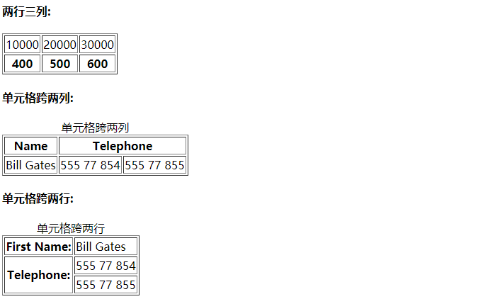
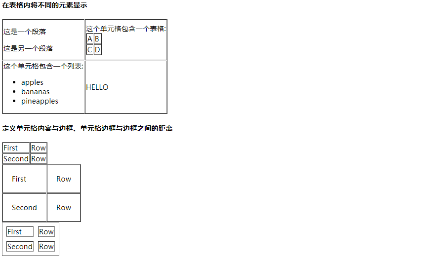
15.HTML区块元素与内联元素
<p> <!-- HTML区块元素与内联元素 -->
<div style="color:red">
<h4>块级元素在浏览器显示时，通常会以新行来开始（和结束）。</h4>
<h4>实例: <h1>, <p>, <ul>, <table></h4>
</div>
<p>
我喜欢 <span style="color:blue">蓝色</span> 的花。<!-- <span> 元素是内联元素，可用作文本的容器 -->
内联元素在显示时通常不会以新行开始。
实例: <b>, <td>, <a>, <img>
</p>
</p>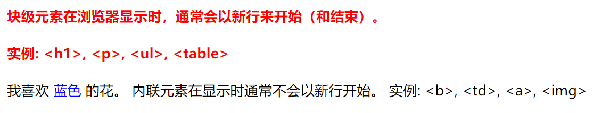
16.HTML布局
<p> <!-- HTML布局 -->
<h4>使用<di>标签进行布局</h4>
<div id="HTML布局" style="width: 400px;">
<div id="header" style="background-color: aquamarine">
<h1 style="margin-bottom: 0;">主要的网页标题</h1> <!-- margin-bottom设置元素的下外边距 -->
</div>
<div id="menu" style="background-color: blue; height:200px;width:100px;float:left;"> <!-- float使文字向某个方向浮动。 -->
<b><big>菜单</big></b><br/>
HTML<br>
CSS<br/>
Javascript<br/>
</div>
<div id="content" style="background-color: indianred;height:200px;width:300px;float:left;">
内容在这里
</div>
<div id="footer" style="background-color: greenyellow;clear: both;text-align: center;"> <!-- text-align设置文本对齐方式。 -->
居中吧
</div>
</div>
<h4>使用表格布局</h4>
<table width="400" height="50" border="0">
<tr>
<td colspan="2" style="background-color: lawngreen">
<h1>主要的网页标题</h1>
</td>
</tr>
<tr>
<td style="background-color: thistle;width: 100px;vertical-align: top;"> <!-- vertical-align 属性设置元素的垂直对齐方式。 -->
<b><big>菜单</big></b><br/>
HTML<br>
CSS<br/>
Javascript<br/>
</td>
<td style="background-color: palegoldenrod;height: 200px;width: 300px;vertical-align: top;">
内容在这里
</td>
</tr>
<tr>
<td colspan="2" style="background-color: deeppink;text-align: center;">
居中吧
</td>
</tr>
</table>
</p>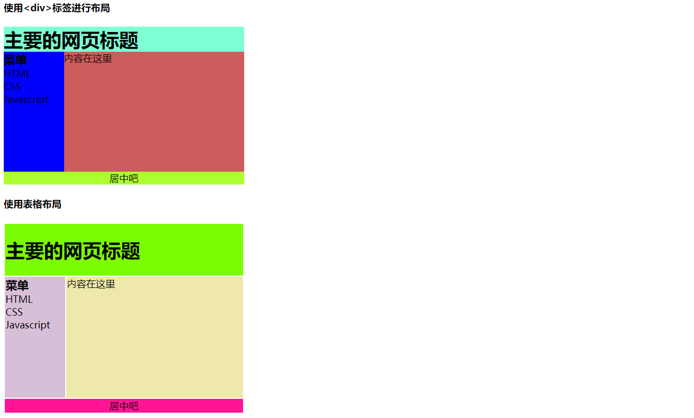
17.HTML表单与输入
<p> <!-- HTML表单与输入 -->
<h2>注册用户<hr ></h2>
<form action="regist.jsp" method="get"> <!-- action表示将表单提交地址，method规定如何发送表单数据。 -->
<table border="0">
<tr>
<td>用户昵称：</td>
<td><input type="text" name="name" placeholder="请填写你的姓名"/></td>
</tr> <!-- placeholder用来提示用户应该输入的信息。 -->
<tr>
<td>登录密码：</td>
<td><input type="password" name="密码" placeholder="请输入你的密码"/></td>
</tr>
<tr>
<td>性别：</td>
<td>
<input type="radio" name="gender" value="1" checked="checked" />男
<input type="radio" name="gender" value="0"/>女
</td> <!-- checked用来规定页面加载时默认选择项。 -->
<tr>
<td>爱好：</td>
<td>
<input type="checkbox" name="football" value="1" checked="checked" />踢足球
<input type="checkbox" name="game" value="2" />玩游戏
<input type="checkbox" name="backetball" value="3" />打篮球
</td>
</tr>
<tr>
<td>头像：</td>
<td><input type="file" name="photo" /></td>
<td><input type="hidden" name="age" value="20" /></td>
</tr>
<tr>
<td>月份：</td>
<td>
<select name="month"> <!-- select用来创建带有选项的选择列表。 -->
<option value="1">一月</option> <!-- option定义下拉列表中的一个选项。 -->
<option value="2" selected="selected">二月</option>
<option value="3">三月</option>
<option value="4">四月</option>
<option value="5">五月</option>
<option value="6">六月</option>
<option value="7">七月</option>
<option value="8">八月</option>
<option value="9">九月</option>
<option value="10">十月</option>
<option value="11">十一月</option>
<option value="12">十二月</option>
</select>
</td>
</tr>
<tr>
<td>简介：</td>
<td>
<textarea name="self" rows="10" cols="20">
请填写你的简介。
</textarea>
</td>
</tr>
<tr>
<td> </td>
<td>
<input type="submit" value="注册" />
<input type="reset" value="重新填写" />
</td>
</tr>
</tr>
</table>
</form>
</p>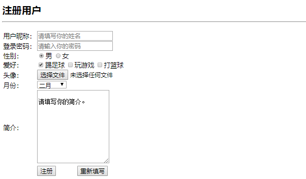
18.HTML框架
<p> <!-- HTML框架 -->
<iframe src="http://www.360.com" width="400"; height="200"></iframe>
<iframe src="http://www.baidu.com" width="400"; height="200"></iframe><br/>
<iframe src="BUNOOB.png" name="iframe_a" width="810"; height="200"></iframe>
<p><a href="http://www.runoob.com" target="iframe_a">RUNOOB.COM</a></p>
<!-- target点击链接会显示在iframe框架里面。 -->
</p>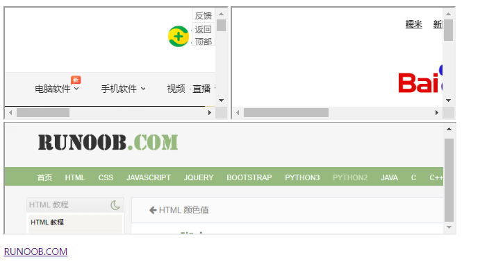
19.HTML脚本
<p> <!-- HTML脚本 -->
<script> <!-- <script> 标签用于定义客户端脚本 -->
document.write("Hello World!");
</script>
<noscript>抱歉，你的浏览器不支持 JavaScript!</noscript>
<!-- 不支持 JavaScript 的浏览器会使用noscript元素中定义的内容（文本）来替代 -->
</p>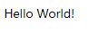
20.常用HTML字符实体
<p> <!-- 常用HTML字符实体 -->
<br><!-- 空格 -->
< <br><!-- 小于号 -->
> <br><!-- 大于号 -->
& <br><!-- 和号 -->
" <br><!-- 引号 -->
' <br><!-- 撇号 -->
© <br><!-- 版权 -->
× <br><!-- 乘号 -->
÷ <br><!-- 除号 -->
</p>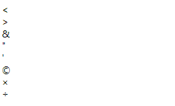
学到这里就学完了基础啊！，我觉得才是入了基础的门口吧，随便踢一脚就能将我提出门外的那种！继续学习后续部分
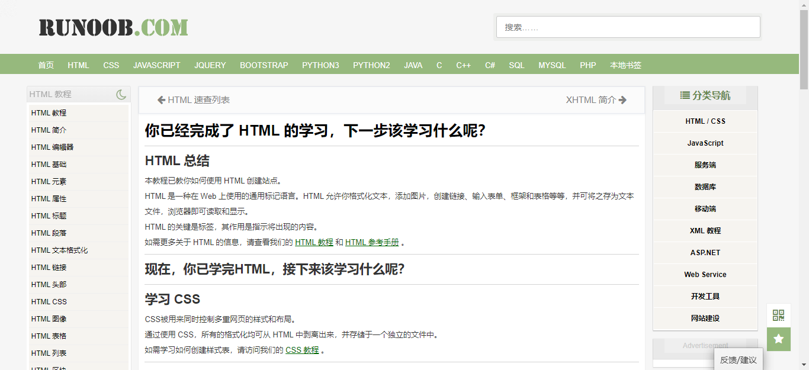
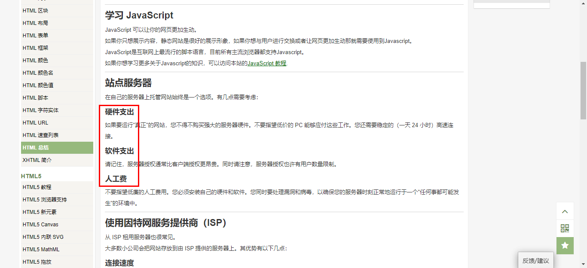
最后从正点原子盗了一张动图，就是觉得好玩，如有侵权，我立即删除，感谢。
<p> <!-- 动图代码 -->
<img src="http://47.111.11.73/uc_server/avatar.php?uid=5&size=small">
</p>